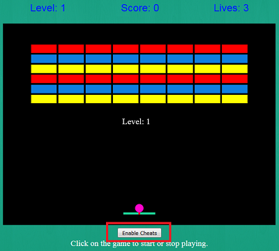

How To Play The Game
The area in red is known as the game window.
In order to start the game, click on the game window.
It is also possible to stop the game by click on the same area.
The game can continued from where it was stopped by clicking on the same area.
Doing this will not restart the game.
However, if the game is lost or won, then the game will start over if the area is once again clicked.

In order to move the paddle left or right, simple move the mouse left or right on the page.
If the paddle reaches the edge of the game window, it will not progress any further.
You will need to move the mouse the opposite direction until the paddle is able to move once more.
Note that moving the mouse up or down does not have any effect on the game.
Additionally, where the ball strikes the paddle will an effect on how fast the ball moves left or right.
If the ball strikes the paddle where the red mark is, it will not move left or right.
The further left or right of the paddle where the ball strikes, determines how fast the ball will move in that direction.

Your game score is shown in the area in red.
Score is determined by how many breaks are successfully broken before the ball reaches the bottom of the screen.
Each brick counts as 1 point.
The total possible score is 80.

If the game is becoming too difficult, then the cheat mode can be activated.
This is done by click on the button labeled "Enable Cheats".
Once this is done, the button text will change to "Disable Cheats".
The cheats can be disabled or enabled at any time.
When cheats are enabled, the ball will pierce multiple bricks, before bouncing off the edge of the game window.
Additionally, when cheats are enabled, the ball will bounce of the bottom of the screen, instead of ending the game.